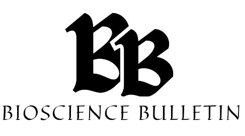

NOIDA,UP


NATURE BIOTECHNOLOGYNEW
New drug approvals reached an all-time high in 2023, with five gene therapies, the first CRISPR–Cas9-edited therapy and a disease-modifying Alzheimer’s drug.

MIT NEWSNEW
MIT scientists build a system that can generate AI models for biology research BioAutoMATED, an open-source, automated machine-learning platform, aims to help democratize artificial intelligence for research labs.
NATURE BIOTECHNOLOGYNEW
New drug approvals reached an all-time high in 2023, with five gene therapies, the first CRISPR–Cas9-edited therapy and a disease-modifying Alzheimer’s drug.